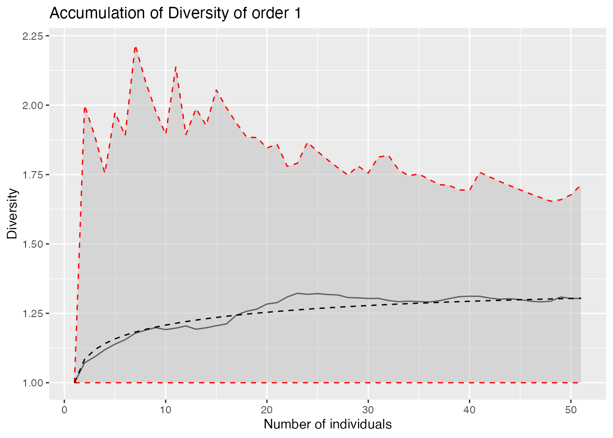

This is a preliminary version of a package designed to measure spatially-explicit diversity.
Getting started
Install the package for R from Github.
library("remotes") remotes::install_github("EricMarcon/SpatDiv")
Demo
Create a random, spatialized community with 100 individuals of 10 species.
library("SpatDiv") rSpCommunity(n=1, size=100, S=10) -> spCommunity plot(spCommunity, which.marks = "PointType")

Plot a rank-abundance curve.
autoplot(as.AbdVector(spCommunity))

Diversity accumulation
With respect to the number of indiduals
Compute the Diversity Accumulation Curve for 1 to 50 neighbors for orders 0, 1 and 2, with the theoretical, null-model curve. Plot it for Shannon diversity.
divAccum <- DivAccum(spCommunity, n.seq=1:50, q.seq=0:2, H0="Multinomial", NumberOfSimulations=1000)
autoplot(divAccum, q = 1)

Compute and plot the mixing index of any order. Save the local values for future use.
mixing <- Mixing(spCommunity, n.seq=1:50, q.seq=0:2, H0="Multinomial", NumberOfSimulations=1000, Individual=TRUE)
autoplot(mixing, q = 1)

With respect to distance
The same accumulation cuves can be computed by increasing the sample area around each point. The argument contains the vector of radii of those circular plots.
divAccum <- DivAccum(spCommunity, r.seq = seq(0, .5, by=.1), q.seq=0:2, spCorrection = "Extrapolation", H0="Binomial")
autoplot(divAccum, q = 1)

Null hypotheses
The actual accumulation curves of diversity and mixing index can be compared to null models with their confidence intervals. Values of the argument can be:
“None”: No null model is run.
“Multinomial”: The accumulation follows a multinomial sampling, with respect to the number of individuals only. The theoretical value and confidence envelope are calculated by the entropart package.
“Binomial”: The individuals are relocated in the window uniformly and independently.
“RandomLocation”: The individuals are relocated accross their actual locations.
The multinomial null hypothesis is by far faster to compute than the others because it does not require point pattern simulations.